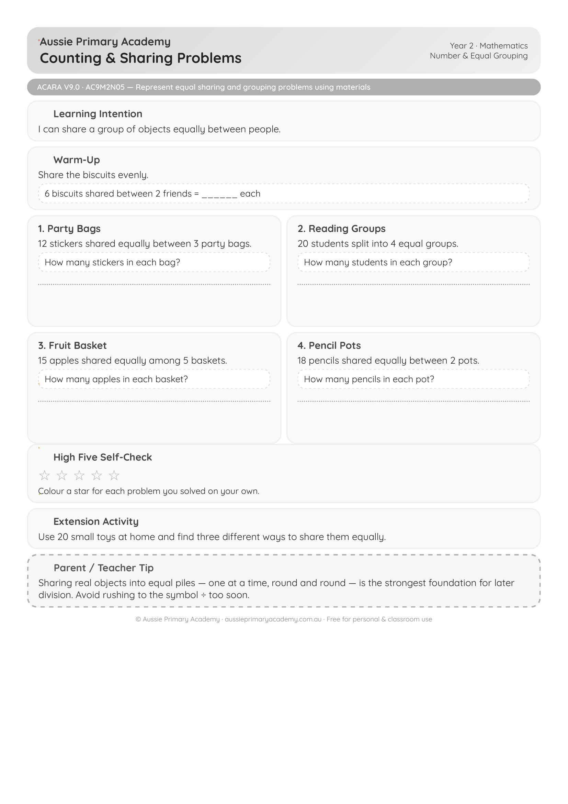

Year 2 · Maths · Number · Free Printable
Counting and Sharing Word Problems
Practise equal sharing and early division through practical word problems.
Worksheet Preview

Preview of first page · Full worksheet inside the PDF
Quick Facts
- Primary learning: Maths · Number
- Year level: Year 2
- Focus: Equal sharing and early division word problems
- Curriculum: AC9M2N05
- Format: Printable A4 PDF
- Best for: Classroom, homework, tutoring, homeschool
About this worksheet
This Year 2 Maths worksheet helps students practise equal sharing and early division through practical word problems. Builds confidence with sharing collections fairly.
Ready to print and use for whole-class lessons, small groups, homework or home learning.
Learning Intention
Students will solve word problems involving equal sharing and early division.
Curriculum Alignment
AC9M2N05 — Multiply and divide by one-digit numbers using repeated addition, equal grouping, arrays and partitioning, and use a variety of strategies.
Aussie Primary Academy is an independent publisher and is not endorsed by ACARA.
Skills Practised
- Equal sharing
- Early division
- Solving word problems
- Practical problem solving
- Number sense
Teacher / Parent Notes
Use counters or drawings to support sharing. Ideal for introducing division concepts.
How to use this worksheet
- Whole class: Explicit teaching + guided practice
- Small groups: Hands-on sharing activities
- Homework: Send home for extra practice
- Tutoring / Homeschool: Clear layout makes it easy to use independently